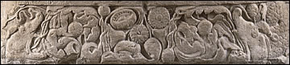

Makaras and lotusesMakaras were mythological crocodile-like creatures. They are sometimes represented with the head of an elephant and the tail of a fish. Makaras appear frequently in the reliefs from Amaravati to protect the Stupa from evil spirits. Lotuses were important symbols of purity. This border shows lotus flowers, buds and vines at the centre. At the two ends of the border are makaras. |